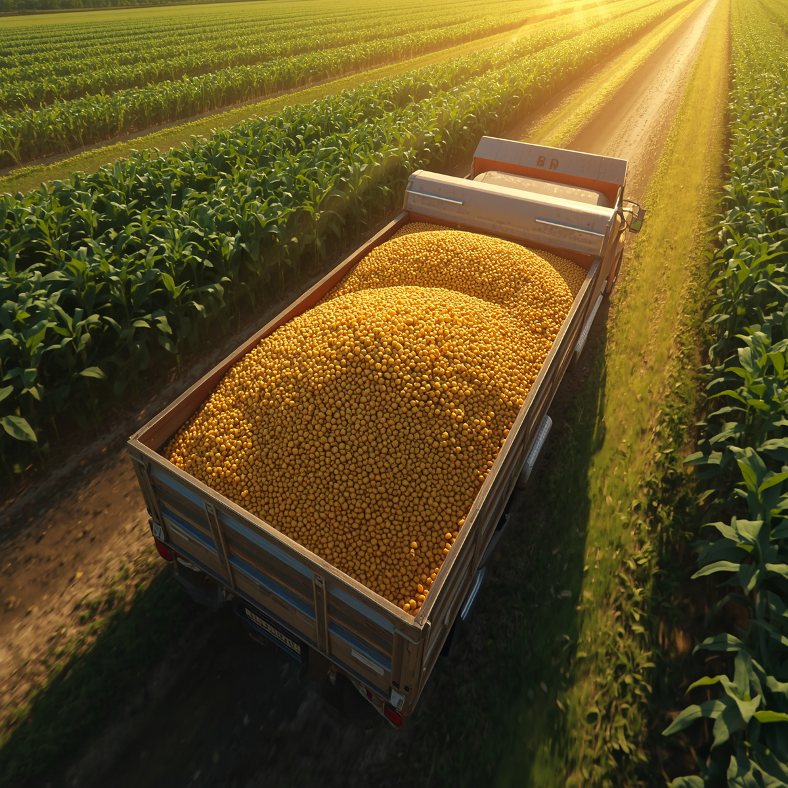
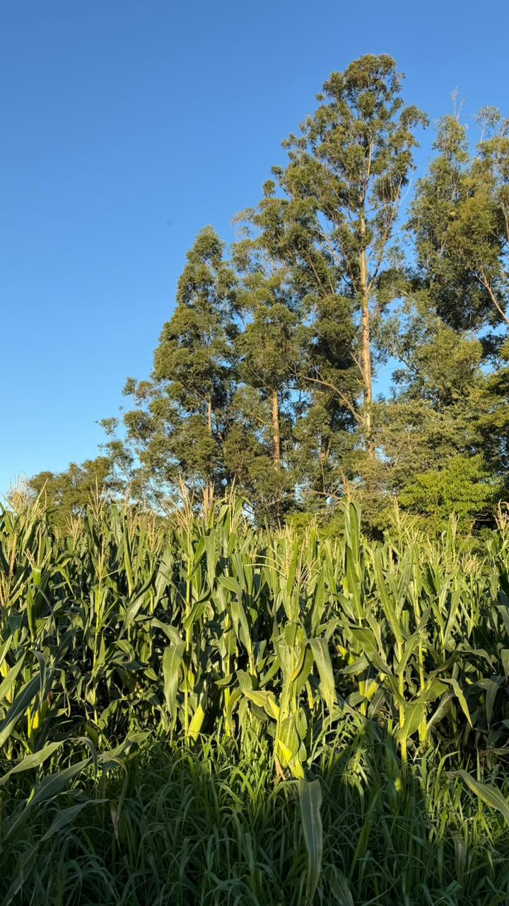

Introdução
O agronegócio é um dos principais motores da economia brasileira, sendo responsável por mais de 23% do PIB e respondendo por boa parte do saldo positivo da balança comercial.
Porém, são utilizados para a produção uma quantidade excessiva de agrotóxicos, que prejudicam o solo.
Mas o maior problema são produtores rurais que não utilizam as doses corretas ou descartam as sobras desses resíduos de forma incorreta.
Fotos / Dados

De acordo com a EMBRAPA, o consumo anual de agrotóxicos no Brasil tem sido superior a 300 mil toneladas de produtos comerciais, com o consumo médio acima de 8kg/ha.
Entende-se que é praticamente impossível a produção de alimentos como o milho e a soja em larga escala sem esses defensivos, e que também consigam suprir a alta demanda e procura do mercado nacional e internacional.
Possíveis Soluções
- Maior fiscalização no uso de pesticidas em propriedades privadas;
- Incentivar o descarte correto de embalagens usadas e restos dos produtos;
- Estabelecer uma quantidade devida para uso de acordo com a propriedade, o tipo de solo e clima.
Essas atitudes, que devem ser tomadas tanto pelo governo, quanto pelos agricultores, podem ajudar na produção de alimentos e prevenção com a natureza.
